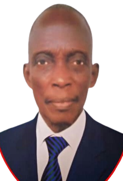
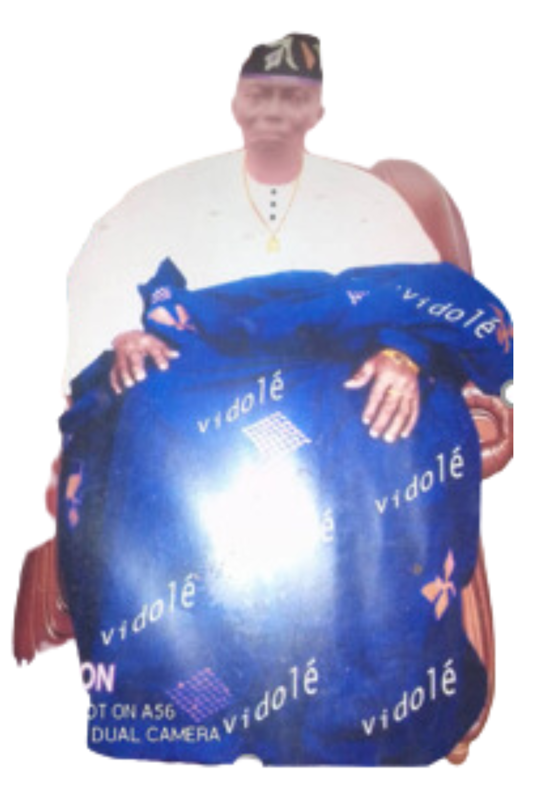

RESUME DE L'HISTOIRE DE GBEHOUENOUKON SODJI ALLOKPESSODE
RESUME DE SA BIBLIOGRAPHIE
GBEHOUENOUKON SODJI Allokpéssodé né le 10 mars 1936 à AKETEKPA. Son père normé GBEHOUENOUKON AMLIHO Bahanssi et sa mère s' appelle HLE Ganhilè. Allokpéssodé a perdu sa mère Ganhilè à l'âge de 14 ans en 1950.

PARTIE Ⅰ
Son papa, Bahanssi est décédé en 1980
Il a deux frères qui sont Aklassi (son grand frère) ; Nestor et une sœur qui s'appelle Danssi.
Il a été nommé GBENOUGAN à AMLIHOGON en 1968 par les sages du village grâce son ledear ship. En 1975 , Allokpéssodé a été élu parmi les conseillers du village de ZAHLA . Il fut le président du groupement villageois du coton ( GVC ) en 1993 de même, le trésorier du GVC session ZA-KPOTA en 1994 .

PARTIE Ⅱ
Allokpéssodé est devenu le chef de la famille SODJI en 2001. C.est de là il est venu s'installer complètement dans la maison natale de le famille à Yadin.
Il va à Amlihgon parfois pour chercher des ouvriers à prendre possession de ses champs d'orange qui dépasse même plus de 15 hectares.
Après l'élection municipale de 2008, Allokpéssodé est élu le CV YADIN dans l'arrondissement de KPOZOUN .
PARTIE Ⅲ
Il est toujours réélu après chaque élection municipale pour le CV ( chef du village) jusqu'à sa mort ( 14 ans sur le CV). Il est le vice trésorier du tribunal de conciliation terrestre en 2018 . En 2 0 18 il atteint hypertension et est
paralysé . Il est décédé le 25 janvier 2022 à YADIN dans sa 86e année.